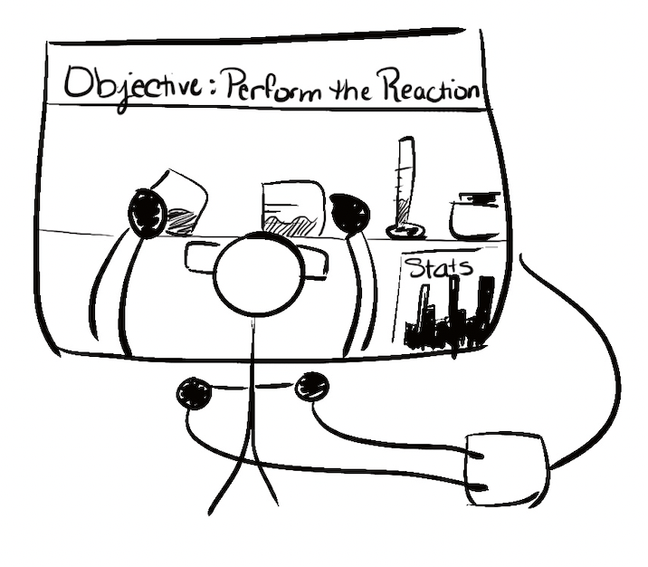

Gamified Employee Training
Potential Customers/Users: Companies and organizations seeking to improve employee engagement, retention, and satisfaction during the training process.
Description: The Gamified Employee Training Platform is a revolutionary solution that transforms traditional training methods into engaging, interactive experiences. Employees complete training modules by participating in games and simulations that mimic real-world scenarios, earning points and rewards along the way. This innovative approach increases employee engagement, retention of knowledge, and overall satisfaction with the training experience.
Visual Depiction:
Prior Works Collection
Needs (or drivers)
The need for effective, engaging, and scalable employee training solutions has driven the development of Gamified Employee Training. Companies are increasingly looking for innovative ways to train their employees to improve knowledge retention, increase motivation, and promote a culture of continuous learning. This innovation aims to make employee training more enjoyable and effective by leveraging gamification techniques.
Resources (or ingredients)
To develop this soft innovation, we would require:
- Instructional designers and subject matter experts to create engaging learning materials
- Game designers and developers to build game-based learning experiences
- A learning management system (LMS) to deliver, track, and manage training
- Integration with existing HR and IT systems for seamless user experience
- Marketing and sales strategies to reach potential customers
Precedents (or points of departure)
Precedents for gamified employee training include platforms like Kahoot!, Quizizz, and 1Huddle, which offer customizable, game-based learning experiences to train employees on various topics. These platforms engage users through competition and interactive quizzes, improving knowledge retention and making the learning process more enjoyable.